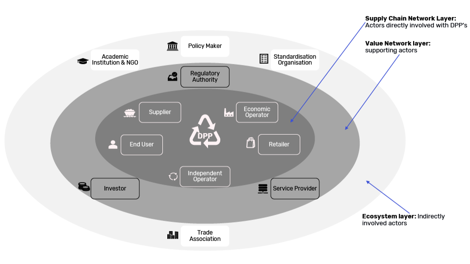
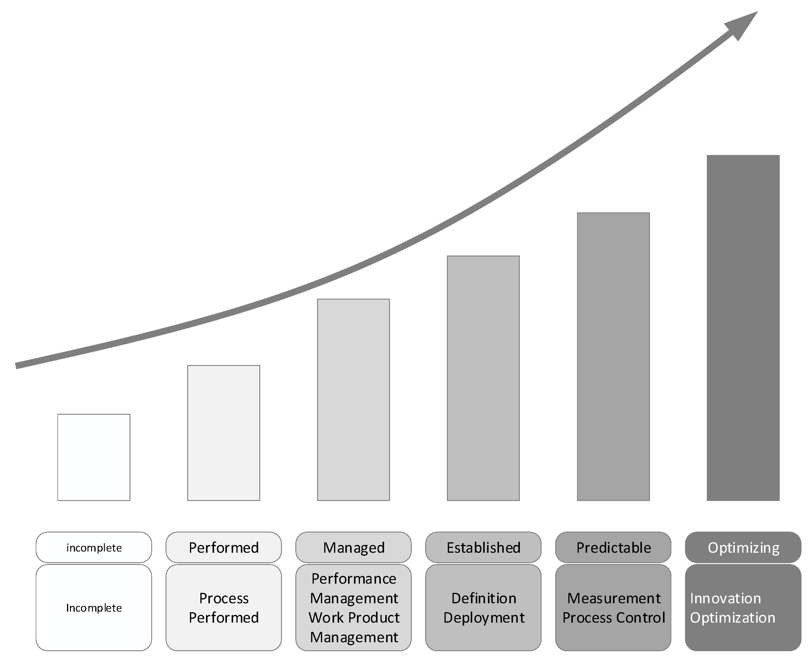
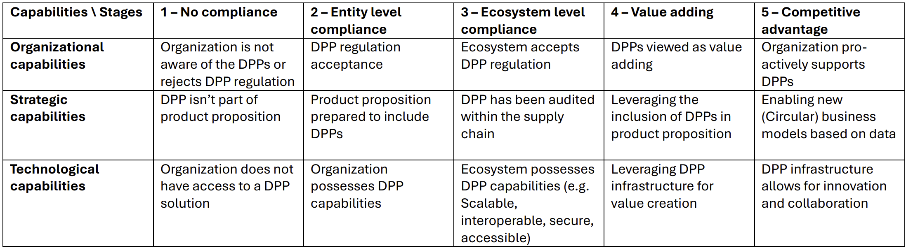

Fill in the following forms to find out what you need to do to take part in the DPP ecosystem.

(e.g. small, large)

(e.g. retailer, economic operator)

(e.g. incomplete, performed, predictable)

(with 2: Entity level compliance, 3: Ecosystem level compliance,
4: Value adding, 5: Competitive advantage)
Requirements for Compliance with Digital Product Passport (DPP) Regulations in the Textiles and Footwear Sector
For a Small-Sized Organization in the Supplier Role with Incomplete Digital Maturity and Basic ICT Knowledge, Aiming for Ecosystem-Level Compliance
1. ID: DPP-TEXT-001
Statement: When acting as a supplier in the textile supply chain, the organization shall collect and provide data related to the chemical composition of materials used in the production process to support restricted substance compliance claims.
Rationale: EU regulations emphasize transparency regarding hazardous substances in textile products, particularly as consumer demand for environmentally safe products grows. This requirement aligns with broader EU strategies to promote sustainable textiles and reduce harmful chemical use.
Source: EU strategy for sustainable and circular textiles (commission)
Priority: High
Risk: Medium – Incomplete digital maturity may hinder data collection and reporting capabilities.
System Validation/Verification Success Criteria: All materials provided to downstream partners include a documented chemical composition summary, verified by at least one external audit annually.
2. ID: DPP-TEXT-002
Statement: The supplier shall ensure that all DPP-related data is exchanged with downstream partners using standardized formats and accessible via a shared digital platform or portal.
Rationale: Standardized data formats and shared platforms facilitate interoperability and transparency across the textile supply chain, which is essential for ecosystem-level compliance.
Source: D4.1 Reference Architecture (working_group)
Priority: Medium
Risk: High – If no shared platform is used, downstream partners may not be able to verify compliance.
System Validation/Verification Success Criteria: Data is exchanged in standardized format (e.g., JSON or XML) and confirmed by receiving partners via receipt or digital signature.
3. ID: DPP-TEXT-003
Statement: The supplier shall establish a basic digital system for tracking and storing DPP data, including materials, chemical content, and supplier information. The system must be compatible with at least one widely used DPP platform in the textile industry.
Rationale: A basic digital system ensures that data is preserved, accessible, and can be shared with partners, supporting ecosystem-level transparency.
Source: Draft Preparatory Study on Textiles for Product Policy Instruments (working_group)
Priority: Medium
Risk: Medium – Incomplete digital maturity increases the risk of data loss or inaccessibility.
System Validation/Verification Success Criteria: Data is stored in a digital format and can be exported for sharing with downstream partners at least quarterly.
4. ID: DPP-TEXT-004
Statement: The supplier shall provide a simplified, user-friendly version of the DPP to end-consumers through product labels or digital means, including basic information on chemical safety and sustainability.
Rationale: Consumer awareness and trust in textile products can be improved through simplified DPP data, which supports the EU’s broader goal of sustainable consumption.
Source: Survey on Spanish consumer preferences (Draft Preparatory Study)
Priority: Medium
Risk: Low – Non-compliance may reduce consumer confidence but not regulatory penalties.
System Validation/Verification Success Criteria: At least 75% of products on the market include a visible or scannable DPP summary by the end of Q3 2026.
5. ID: DPP-TEXT-005
Statement: The supplier shall collaborate with at least one trusted third-party or industry body to authenticate the identity of the organization and its facilities for DPP data exchange.
Rationale: Authentication of organizational and facility identities ensures trust in data exchanges and supports secure, reliable DPP ecosystems.
Source: D4.1 Reference Architecture (working_group)
Priority: High
Risk: Medium – Without authentication, there is a higher risk of data misuse or misattribution.
System Validation/Verification Success Criteria: The organization is registered with a recognized industry body (e.g., Textile Exchange or ZDHC) and receives a digital certificate for DPP data exchange.
6. ID: DPP-TEXT-006
Statement: The supplier shall participate in at least one industry-wide training or workshop on DPP implementation and data management by the end of 2026.
Rationale: Small suppliers with incomplete digital maturity benefit from external guidance and peer learning to improve compliance readiness.
Source: EU strategy for sustainable and circular textiles (commission)
Priority: Medium
Risk: Low – Participation is not mandatory but enhances long-term compliance.
System Validation/Verification Success Criteria: Attendance confirmation or certificate from a relevant industry workshop is submitted by end of 2026.
7. ID: DPP-TEXT-007
Statement: The supplier shall ensure that all DPP data submitted to downstream partners or consumers is verified against internal quality control checks at least once per quarter.
Rationale: Regular internal verification helps prevent data errors and supports the integrity of the DPP ecosystem.
Source: Draft Preparatory Study on Textiles for Product Policy Instruments (working_group)
Priority: High
Risk: Medium – Incorrect data could lead to non-compliance or reputational risk.
System Validation/Verification Success Criteria: A documented internal audit report is generated and archived every quarter.
8. ID: DPP-TEXT-008
Statement: The supplier shall maintain a digital log of all DPP data exchanges with partners, including timestamps and data versions.
Rationale: Maintaining a digital log supports traceability and accountability in case of disputes or audits.
Source: D4.1 Reference Architecture (working_group)
Priority: Medium
Risk: Low – However, missing logs may complicate compliance verification.
System Validation/Verification Success Criteria: A log is maintained and accessible for at least 12 months.
Sources
- Draft Preparatory Study on Textiles for Product Policy Instruments (working_group) – [https://susproc.jrc.ec.europa.eu/product-bureau/product-groups/467/home]
- D4.1 Reference Architecture (working_group) – [https://zenodo.org/records/15467720]
- EU strategy for sustainable and circular textiles (commission) – [https://environment.ec.europa.eu/publications/textiles-strategy_en]
End of Requirements Document